Vision Transformers are widely adopted as the backbone of vision foundation models, but they are known to produce high-norm artifacts that degrade representation quality. When knowledge distillation transfers these features to students, high-norm artifacts dominate the objective, so students overfit to artifacts and underweight informative signals, diminishing the gains from larger models. Prior work attempted to remove artifacts but encountered an inherent trade-off between artifact suppression and preserving informative signals from teachers. To address this, we introduce Singular Nullspace-Guided Energy Reallocation (SiNGER), a novel distillation framework that suppresses artifacts while preserving informative signals. The key idea is principled teacher feature refinement: during refinement, we leverage the nullspace-guided perturbation to preserve information while suppressing artifacts. Then, the refined teacher's features are distilled to a student. We implement this perturbation efficiently with a LoRA-based adapter that requires minimal structural modification. Extensive experiments show that SiNGER consistently improves student models, achieving state-of-the-art performance in multiple downstream tasks and producing clearer and more interpretable representations.
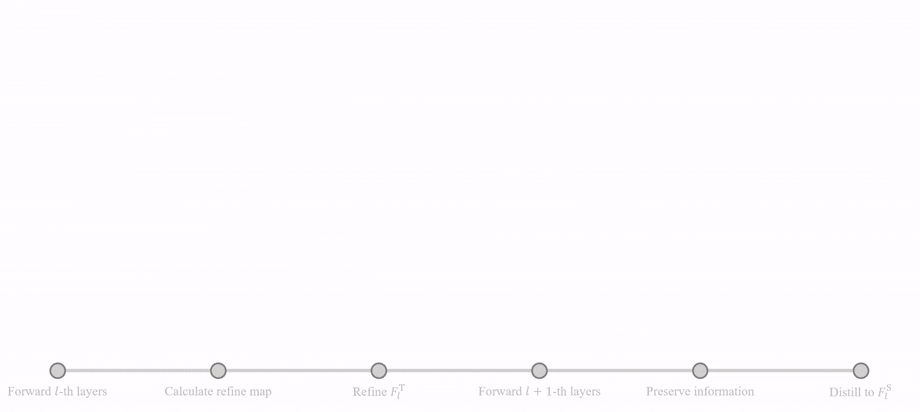
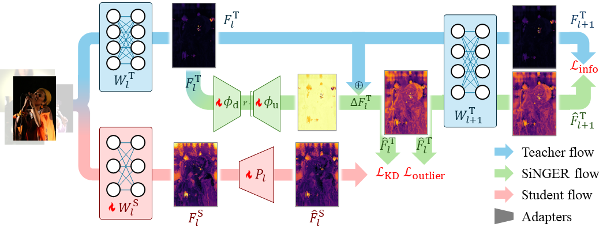
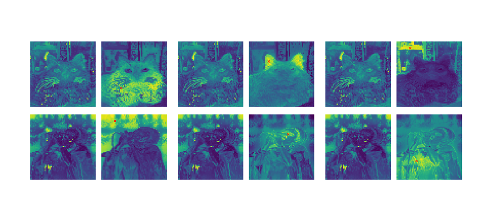
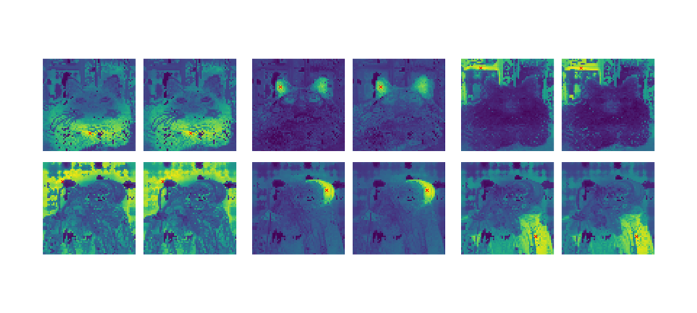
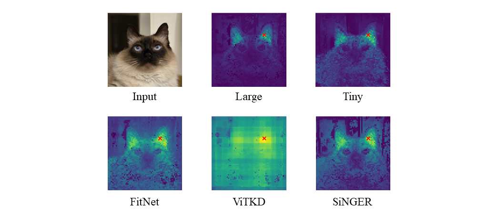
To evaluate SiNGER-distilled ViT as a VFM, we adopt the student network to a diverse set of downstream tasks.
Specifically, we consider six representative benchmarks: ImageNet-1K validation set for large-scale classification, ADE-20K for semantic segmentation, NYUd-v2 for depth estimation, iNaturalist-2019 for long-tail classification, ImageNet-R and ImageNet-v2 for domain shift robustness, and four fine-grained classification datasets.
We evaluate SiNGER on multiple teacher-student configurations spanning both the canonical ViT and the modern DeiT-III, covering a range of model scales.
SiNGER demonstrates consistent improvements over FitNet and ViTKD on most benchmarks.
On IN-val, ADE-20K, NYUd-v2, DS, and FG, SiNGER yields large gains, approaching teacher performance despite the smaller capacity.
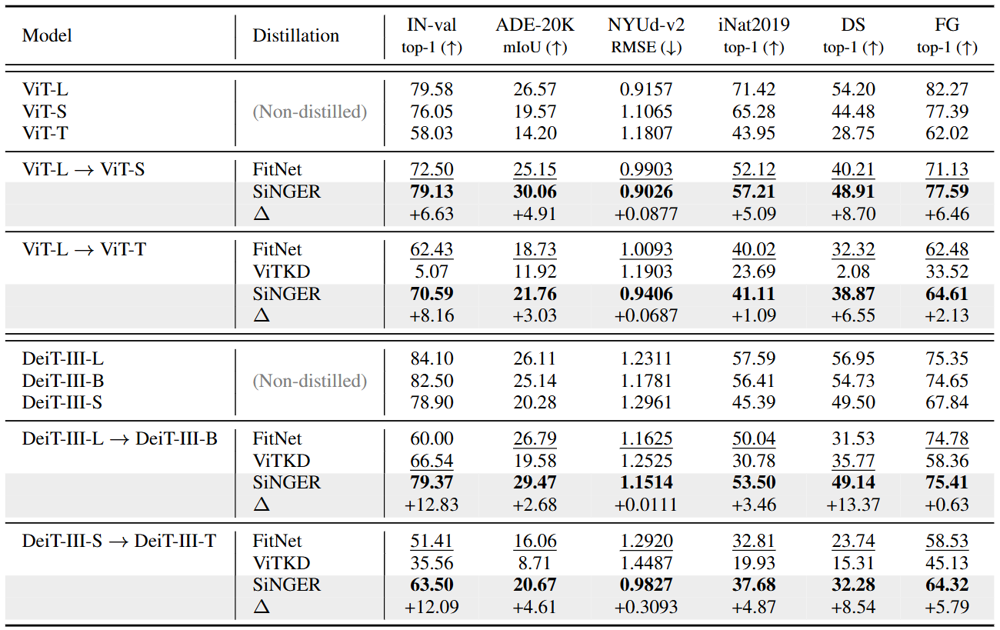
We empirically analyze how the optimized adapter operates on ImageNet-1K. To probe the coupling with the next layer, we evaluate at the 17th intermediate layer. The teacher produces high-norm artifacts that are distinctly gathered as a group. We observed that SiNGER effectively draws such artifacts into the normal-patch range while preserving informative features. This results in stabilized gradient flow through the normal patches (Figure 6). The 17th and 18th layers yield cosine similarity of 0.9566 and 0.9731 with negligible variance, respectively, which is clearly considered similar (Table 3).
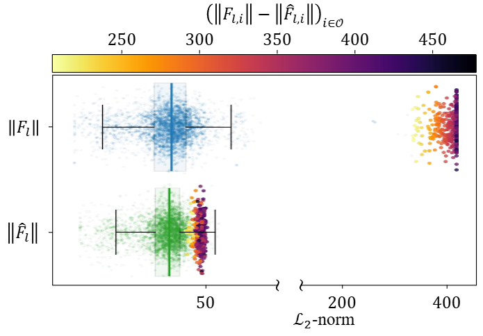
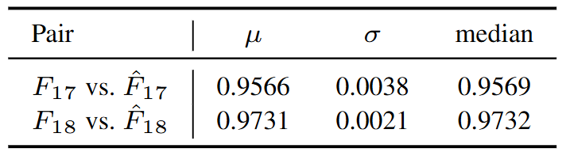
We report four ablations, focusing on initialization, losses, hyperparameters, and distillation layers.
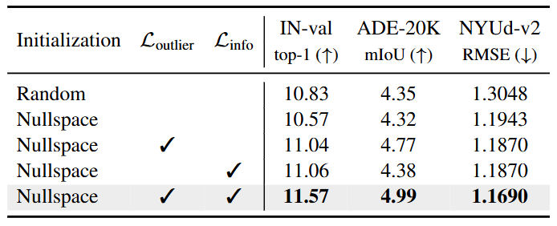
In Table 5a, initialization markedly increases alignment to N_l+1: E_safe reaches 0.83/0.76 for φup,l at l=17, 23, and 0.55/0.58 for φdown,l. Both are under 0.27 for random initialization. This provides strong evidence that the initialization guides optimization into the null space, yielding substantially higher Esafe across layers and for both φup,l and φdown,l, which indicates successful guidance toward the null space directions. Meanwhile, Eprob remains lower or comparable under SiNGER, but our objective is not to minimize Eprob per se; rather, to ensure that the learned parameters predominantly occupy N_l+1 so as to suppress high-norm amplification while preserving useful directions. Although nullspace initialization stabilizes the refinement direction and avoids perturbations that conflict with the subsequent block, it does not lead to measurable performance improvements (Table 4).
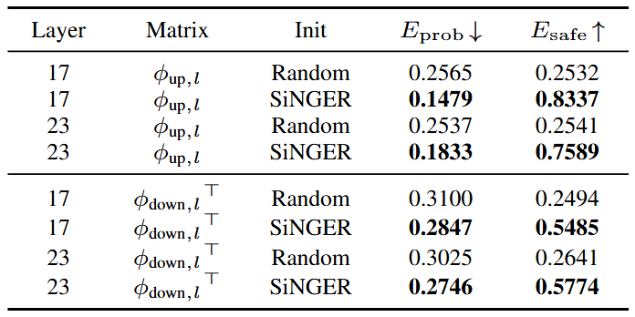
In Table 5b, lower DG indicates better preservation of pairwise feature relations. Compared to outlier suppression loss alone, adding information preservation loss nearly halves the DG distance (14.22 → 7.25) and substantially improves teacher-student alignment (72.36 → 41.71). Thus, the information preservation term prevents degenerate updates and maintains the relational geometry that is crucial for effective transfer. Table 4 shows that adding Loutlier yields the largest improvement on both ImageNet-1K and ADE-20K, as it directly mitigates the dominant artifact tokens that bias distillation. Information preservation loss provides additional gains by enforcing information consistency between the teacher and student. When all components are combined, the student reaches its best performance across all tasks, demonstrating that SiNGER functions most effectively as an integrated framework rather than as a set of independent mechanisms. These results highlight the individual contribution of each component.
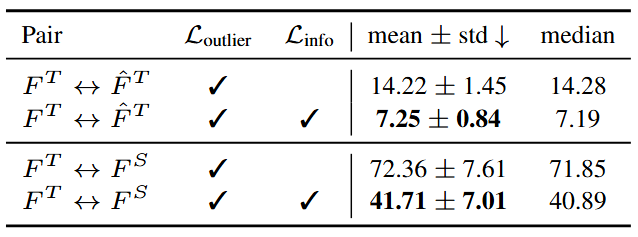
@article{yu2025singer,
title={SiNGER: A Clearer Voice Distills Vision Transformers Further},
author={Yu, Geunhyeok and Jeong, Sunjae and Choi, Yoonyoung and Kim, Jaeseung and Hwang, Hyoseok},
journal={arXiv preprint arXiv:2509.20986},
year={2025}
}